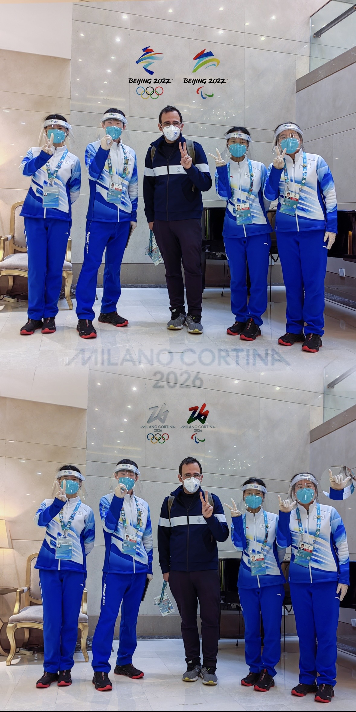

两届奥运参与者
Two-time Olympic Participant

北京一共办过两次奥运，Beijing 2008的开幕式给世人展示了什么叫中国人的凝聚力，整齐划一的击缶表演堪称经典，盛大的开幕式载入奥运开幕的史册，届时我7岁，和爸妈在奥运结束后来到鸟巢，水立方场馆打卡留念。到了Beijing 2022，除了微笑，专业才更是北京最美的名片。不同于北京2008盛大的开幕式，北京冬奥会开幕式以简约拉开帷幕，届时我有幸作为北京第二外国语学院派出的志愿者，投身于奥运事业当中。
我当时负责冬奥签约酒店的住宿服务，入住我们酒店的绝大部分是技术官员和赞助商，我们提供中英文的酒店入住、交通信息服务。此外，北京冬奥举办期间疫情仍在继续，我作为酒店的新冠联络员，全程监控酒店的防疫情况，从飞机落地前、到办理入住、到入住期间，如果有任何一环出现了阳性的情况，我会按照指定好的流程，协助患者进行转运隔离。在服务期间，收到了很多媒体和赞助商给的pins。


米兰科尔蒂娜2026冬奥会开幕式的导演组
通过学校项目提名的海外实习的经历可能不能拿来借鉴，但是如果你也想成为奥运会的Freelancer，确实可以关注奥组委或者奥林匹克广播服务公司的Freelencer招聘广告，订阅他，每届奥运会都会召唤你。你可以通过 https://careers.obs.tv/ 了解更多信息，Freelancer通常要求在相关领域的几年的从业经历，有想链接的可以联系我。
巴黎奥运会期间，我是和30名实习生一起出征，受雇于奥林匹克广播服务公司OBS/OCS，在巴黎奥运会的国际转播中心IBC，坐落于Paris Le Bourget Exhibition Centre，我们在这里接受到摄影记者从比赛现场发回来的信号，处理原始素材Original Feed，经过关键字标注，输出为可供其他国家转播商检索的片段。例如，在高尔夫比赛中，中国转播商CMG可以通过检索，中国，5号球员，第18洞，果岭，击球技巧，庆祝表情，来定位到他们想要的素材切片。


我负责的是高尔夫和冲浪的全程转播，一共16天，12个时区，120+运动员，100+小时素材切片，0失误。在此期间，我跟着奥运赛手的慢动作，看他们怎么打高尔夫，在距离12个时区外的塔希提岛上看日出，看冲浪选手从准备到比赛，属实也是一场陪伴了。冲浪比赛转播完，通常是巴黎时间的凌晨5点，巴黎也马上要日出了，索性再去看一场日出。